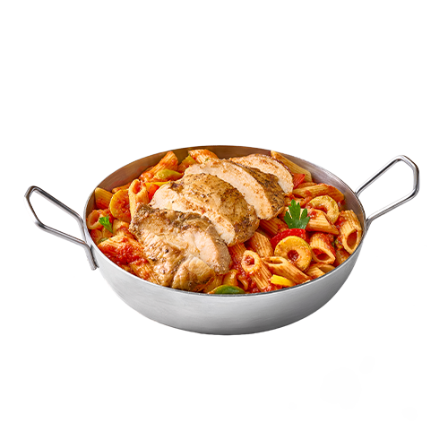
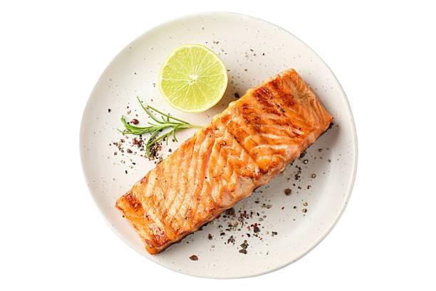
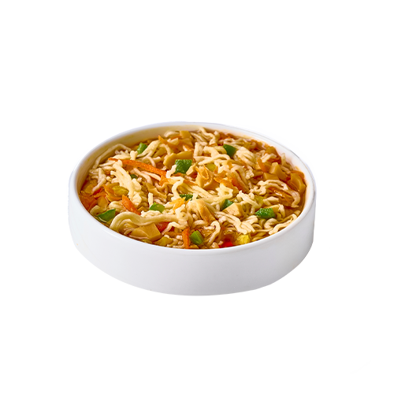
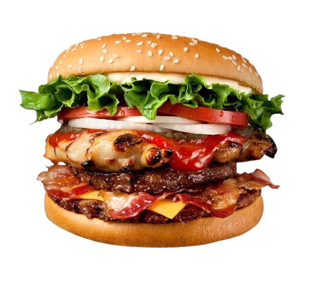
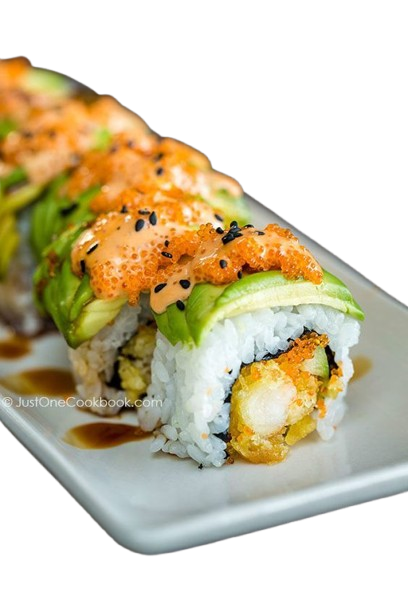
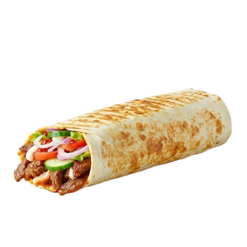
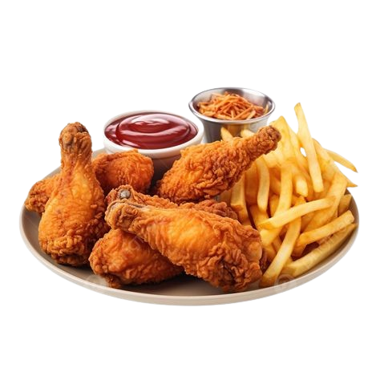
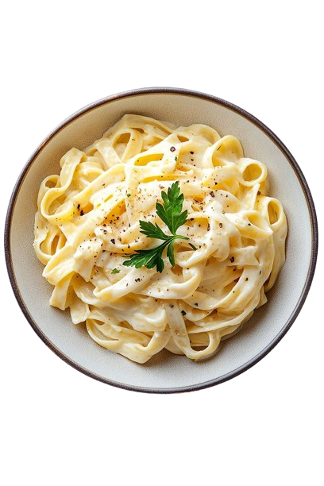
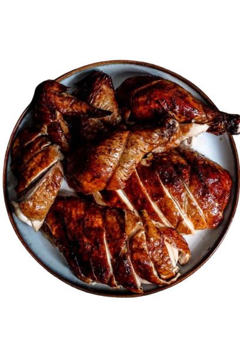

OUR RECIPES RIVAL THOSE OF POPULAR RESTAURANTS
Meals
Margherita Pizza
Margherita Pizza
Ingredients For the Dough:
500g strong white flour
1 tsp salt
1 tsp dried yeast
200ml warm water
1 tbsp olive oil
For the Sauce:
400g passata (or crushed tomatoes)
Fresh basil leaves
1 clove garlic (crushed, optional)
Salt and pepper to taste
For Topping:
250g fresh mozzarella cheese
Extra virgin olive oil for drizzling
Combine flour, salt, and yeast. Add water and oil; mix, then knead for 5 minutes. Cover and rest for 30+ minutes. Mix passata, garlic, basil, salt, and pepper in a bowl. Preheat oven to 240°C. Divide dough into two, then roll each into thin 25cm rounds. Place dough on a preheated baking sheet, spread sauce thinly, top with torn mozzarella, and drizzle with olive oil. Bake for 8–10 minutes until the crust is golden and crispy. Garnish with fresh basil, slice, and serve hot.

Mexican Chicken Pasta
Mexican Chicken Pasta
Ingredients For the Dough:
Pasta: 500g of your preferred shape (Penne or Spaghetti works well). Chicken: 500g of chicken breast, cut into strips. Vegetables: 1 large onion, sliced. Bell peppers (red, green, and yellow), sliced into strips. Mushrooms, fresh or canned (optional). ½ cup canned corn. Seasoning & Sauce: 3 tbsp olive oil or vegetable oil. 1 tsp minced garlic. 2 tbsp tomato paste. Spices: Salt, black pepper, paprika, curry powder (optional), and oregano. Optional: A splash of soy sauce or shredded mozzarella cheese for topping.
Boil 500g of pasta until al dente. Sauté 500g of chicken breast strips with 3 tbsp oil, 1 tsp minced garlic, salt, pepper, paprika, and curry powder until golden. Stir in 1 sliced onion, bell peppers, mushrooms, and ½ cup corn. Cook until slightly tender. Mix in 2 tbsp tomato paste and ½ cup water/broth. Simmer briefly. Toss the cooked pasta into the pan until coated. Top with mozzarella and broil until melted and golden. Serve hot.

Chicken Crispy Crepe
Chicken Crispy Crepe
Ingredients For the Dough:
For the Crepe Batter: Flour, milk, eggs, a pinch of salt, and a tablespoon of oil. For the Crispy Chicken: Chicken breast strips,flour , breadcrumbs(or crushed cornflakes for extra crunch), beaten eggs, and spices (salt, black pepper, garlic powder, paprika). For the Filling: Shredded lettuce, sliced tomatoes, pickles,cheese (cheddar or mozzarella), and your choice of sauce (mayonnaise, ketchup, or ranch).
Season chicken strips, coat in flour (mixed with cornstarch for extra crunch), dip in beaten eggs, then breadcrumbs. Deep-fry until golden. Blend flour, milk, eggs, salt, and oil. Cook thin layers in a non-stick pan until set. Spread sauce on a crepe, add chicken, lettuce, tomatoes, pickles, and cheese. Fold into a triangle or roll, then toast in a pan until the cheese melts and the exterior is crisp. Serve warm..
.png)
Koshary
Koshary
Ingredients For the Dough:
The Base: 1 cup brown lentils (soaked for an hour). 1 cup rice (washed and drained). 2 cups small pasta (like macaroni). 1 can chickpeas (or 1 cup boiled). The Crispy Onions: 3 large onions, thinly sliced. Oil for frying. The Tomato Sauce: 2 cups tomato juice/puree. 3 tbsp tomato paste. 4 cloves garlic, minced. 1 tsp cumin, salt, and pepper to taste. 1 tbsp vinegar.
Fry sliced onions in oil until golden and crispy; drain and reserve the flavored oil. Boil lentils until tender, cook pasta al dente, and steam rice until fluffy. Combine with boiled/canned chickpeas. Sauté minced garlic in a little of the reserved onion oil. Add tomato paste, tomato juice, vinegar, and spices; simmer until thickened (10–15 mins). Layer rice, lentils, and pasta in a bowl. Add chickpeas, top with hot tomato sauce, and garnish with crispy onions. Serve with a side of "Dakka" (garlic, vinegar, lemon, and cumin) and spicy chili sauce.

salmon
salmon
Ingredients For the Dough:
Salmon fillet (fresh or thawed). Marinade: 1 tbsp olive oil. 1 tbsp fresh lemon juice. 1 clove garlic, minced. Salt and black pepper to taste. Optional herbs: Dried rosemary, thyme, or a pinch of paprika.
Preheat oven to 200°C (400°F). Pat salmon fillet dry. Whisk olive oil, lemon juice, garlic, and herbs; brush evenly over the salmon. Place skin-side down on a lined baking sheet. Bake for 12–15 minutes (broil for the last 1–2 minutes for a golden finish). Best enjoyed hot with lemon, fresh herbs, and a side of rice or roasted vegetables. The salmon is ready when it flakes easily with a fork.
.png)
Butter Chicken
Butter Chicken
Ingredients For the Dough:
Chicken Marinade: 500g chicken breast (cubed), ½ cup yogurt,1 tsp each of grated ginger, minced garlic,paprika, garam masala,and salt. The Sauce: 3 tbsp butter, 1 finely chopped onion, 2 cloves minced garlic, 1 tsp each of (ginger, paprika, turmeric, garam masala, coriander powder), 1 cup tomato puree/juice, ½ cup heavy cream, fresh coriander for garnish.
Mix chicken with yogurt and spices; refrigerate for at least 1 hour. Sauté chicken until golden and cooked through; set aside. Sauté onions, garlic, ginger, and spices in butter. Add tomato puree and simmer until thickened. Stir in heavy cream, add the cooked chicken, and simmer for 5 minutes. Garnish with fresh coriander and serve with Naan or Basmati rice. Blend and strain the sauce before adding the chicken for a silky, restaurant-quality texture.

Noddles
Noddles
Ingredients For the Dough:
2 cups all-purpose flour. 2 large eggs. A pinch of salt. 1–2 tbsp water (if needed).
Mix flour, salt, and eggs into a firm dough. Knead until smooth and let rest for 30 minutes. Roll the dough until very thin, dust with flour, and cut into thin strips. Boil in salted water for 2–3 minutes until they float, then drain. Toss immediately into a stir-fry with sauce and vegetables. Add a half-teaspoon of turmeric or curry powder to the flour for a vibrant golden color and extra flavor.

Beef Burger
Beef Burger
Ingredients For the Dough:
Meat: 500g ground beef (use 80% lean / 20% fat for the best juiciness). Seasoning: Salt and black pepper (keep it simple). Optional: Garlic powder, onion powder, or a dash of Worcestershire sauce. Serving: Burger buns, cheddar cheese slices, lettuce, tomato, onion, pickles, mayonnaise, and ketchup.
Form meat into equal balls, press into 2cm patties, and make a thumb indentation in the center to prevent puffing. Refrigerate patties for 20–30 minutes to help them hold their shape. Sear in a skillet with oil over medium-high heat for 3–4 minutes per side. Do not press down with a spatula. Add a cheese slice one minute before cooking is finished; cover the pan briefly to melt. Butter the buns and toast until golden. Layer mayo, ketchup, lettuce, tomato, and the patty on the bun. Salt the outside of the patty right before cooking to ensure a tender texture. Handling: Be gentle; do not overwork the meat.

Sushi
sushi
Ingredients For the Dough:
Sushi Rice: 2 cups Japanese short-grain rice (rinsed until water runs clear). Seasoning: 1/4 cup rice vinegar, 1 tbsp sugar, 1 tsp salt. Fillings: Nori (seaweed sheets), cucumber strips, avocado, imitation crab, or sushi-grade raw fish (tuna/salmon). Serving: Soy sauce, pickled ginger, and wasabi.
Cook rice and fold in a mixture of rice vinegar, sugar, and salt; let cool to room temperature. Place nori on a bamboo mat and spread a thin layer of rice, leaving a 2cm border at the top. Arrange fillings in the center, roll tightly using the mat, and seal the edge with a little water. Use a sharp, damp knife to cut the roll into 6–8 even pieces, cleaning the blade between cuts. Pro Tips Keep fingers damp with water and vinegar to prevent sticking. Use moderate amounts of filling to ensure a tight seal. Notes/Use a very sharp knife to avoid crushing the roll while slicing.

Shawarma
Shawarma
Ingredients For the Dough:
Protein: 500g chicken breast or thigh (thinly sliced). Marinade: 3 tbsp olive oil, 2 tbsp yogurt, 1 tbsp lemon juice, 2 cloves minced garlic, 1 tsp cumin, 1 tsp coriander, 1/2 tsp turmeric, 1/2 tsp cinnamon, salt, and pepper. Serving: Pita bread or tortillas, tahini sauce or garlic sauce, shredded lettuce, sliced tomatoes, and pickles.Combine marinade ingredients with thinly sliced chicken. Refrigerate for at least 2–4 hours (overnight is best). Sear chicken in a hot skillet with a little oil in batches until golden and cooked through (6–8 minutes). Warm bread, spread with garlic or tahini sauce, add chicken and vegetables, then roll tightly. Pro Tips Cut chicken into thin, uniform strips against the grain for better texture. Use high heat to achieve a charred, rotisserie-style flavor.

Crispy Fried Chicken
Crispy Fried Chicken
Ingredients For the Dough:
Chicken: 1kg chicken pieces (thighs and drumsticks are best). Buttermilk Marinade: 2 cups buttermilk (or milk mixed with 1 tbsp vinegar), 1 tsp salt, 1 tsp black pepper, 1 tsp garlic powder. Flour Coating: 2 cups all-purpose flour, 1/2 cup cornstarch (the secret to crispiness), 1 tsp salt, 1 tsp paprika, 1 tsp garlic powder, 1 tsp onion powder, 1/2 tsp cayenne pepper (optional for heat). Frying: Vegetable oil for deep frying.Soak chicken in a buttermilk and spice mixture for at least 4 hours (or overnight) to tenderize. Coat the chicken thoroughly in a mixture of flour, cornstarch, and spices, shaking off the excess. Deep-fry in 175°C oil in batches for 12–15 minutes until golden brown and the internal temperature reaches 74°C. Let the chicken rest on a wire rack or paper towels for 5 minutes before serving to remove excess oil. Pro Tips Essential for creating a long-lasting, crispy crust. Maintain oil at 175°C to avoid greasy or burnt chicken. Repeat the buttermilk and flour steps if you prefer an extra-thick, crunchy coating.

sausage feteer
sausage feteer
Ingredients For the Dough:
Dough: Pizza dough, puff pastry, or phyllo pastry (Goulash) sheets. Filling: 250–300g oriental sausage (cut into small pieces), 1 onion (sliced), 1 green bell pepper (diced), 1 tomato (diced, seeded), salt, black pepper, and meat spices. Toppings: Sliced black olives and shredded mozzarella or mixed cheese.Brown the sausage in a skillet, add vegetables and spices, cook until flavors meld, and let cool. * Pizza Place half in a greased pan, add filling and cheese, cover with the remaining dough, and seal edges. Layer buttered sheets, add filling and cheese, then cover with remaining sheets. Preheat oven to 200°C. Brush the top with egg or ghee and bake for 20–25 minutes until golden. Pro Tips Drain excess liquid from the filling to keep the crust crispy. Combine mozzarella with a sharp cheese (like Rumi) for a richer taste. Texture: When using phyllo, add a milk-and-egg mixture halfway through baking for a soft, delicious crust.
Samosa
Samosa
Ingredients For the Dough:
Pastry: Samosa wrappers or puff pastry sheets (cut into strips). Filling: 2 boiled potatoes (mashed), 1/2 cup cooked peas, 1 finely chopped onion, 1 tsp cumin, 1 tsp coriander powder, 1/2 tsp chili powder, salt, and fresh cilantro. Binding: A simple paste made of 1 tbsp flour mixed with 1 tbsp water. Frying: Vegetable oil for deep frying.Sauté onions, add spices, then mix in mashed potatoes and peas. Season with salt and cilantro, then let the mixture cool completely. Fold a pastry strip into a triangle pocket and fill with the potato mixture. Close the opening, brush edges with a flour-water paste, and press firmly to seal. Deep-fry in medium-hot oil until golden brown and crispy (4–5 minutes). Drain on paper towels. Pro Tips Always use cool filling to keep the pastry crisp and prevent it from tearing. Maintain a steady, moderate heat; if the oil is too hot, the exterior will burn before the inside is cooked. Ensure edges are tightly sealed with flour paste to prevent the samosas from bursting during frying.
Hawawshi meat
Hawawshi meat
Ingredients For the Dough:
Meat Mixture: 500g minced beef (with 20% fat content is ideal for juiciness), 1 finely grated onion, 1 small green bell pepper (finely chopped), 1 chili pepper (optional), 2 tbsp chopped fresh parsley. Seasoning: 1 tsp salt, 1/2 tsp black pepper, 1/2 tsp ground coriander, 1/2 tsp allspice (or "Baharat"), and a pinch of chili flakes. Bread: 4–5 fresh pita bread loaves (cut open slightly at one side to create a pocket). Cooking: 2–3 tbsp ghee or vegetable oil for brushing.Mix minced beef, grated onion, peppers, parsley, and spices. Marinate for 30 minutes for better flavor. Spread the meat mixture thinly and evenly inside pita bread pockets. Coat both sides of the bread generously with ghee or oil to ensure a golden, crispy crust. Bake in the oven at 200°C for 15–20 minutes (flipping halfway) OR cook in a skillet over medium heat for 5–7 minutes per side. Wrap in foil for a few minutes before serving to achieve the perfect texture; serve with pickles or tahini. Pro Tips Use beef with at least 20% fat; the fat flavors the bread as it melts during cooking. Keep the meat layer thin to ensure it cooks through before the bread burns. For maximum crunch in the oven, place the pita directly on the oven rack.

Creamy White Sauce Pasta
Creamy White Sauce Pasta
Ingredients For the Dough:
Pasta: 250g Fettuccine or Penne. Sauce: 2 tbsp butter, 2 cloves minced garlic, 2 tbsp all-purpose flour, 1.5 cups whole milk (or half-and-half for extra creaminess), 1/2 cup grated Parmesan cheese. Seasoning: Salt, black pepper, and a pinch of nutmeg or dried oregano. Optional: Sautéed mushrooms or grilled chicken breast slices.Cook pasta al dente, reserve 1/2 cup of cooking water, and drain. Melt butter, sauté garlic, and whisk in flour to create a smooth paste without browning. Gradually whisk in milk over medium heat until thickened, then stir in Parmesan until melted. Season with salt, pepper, and nutmeg. Toss pasta into the sauce, adding a splash of reserved water if needed for the right consistency. Pro Tips Use reserved pasta water or extra milk to thin the sauce if it becomes too thick. Use freshly grated Parmesan for better melting and flavor. Cook pasta al dente to prevent it from becoming mushy when tossed with the sauce.

Roasted Chicken
Roasted Chicken
Ingredients For the Dough:
Chicken: 1 whole chicken (or 1kg of pieces like drumsticks and thighs). Marinade: 1/4 cup olive oil, 3 tbsp yogurt (for tenderness), juice of 1 lemon, 3 cloves minced garlic, 1 tbsp tomato paste. Seasoning: 1 tsp salt, 1/2 tsp black pepper, 1 tsp paprika, 1tsp ground coriander, 1/2 tsp cumin, and a pinch of dried oregano.Whisk olive oil, yogurt, lemon juice, garlic, tomato paste, and spices until smooth. Coat the chicken thoroughly inside and out; refrigerate for at least 6 hours to allow flavors to penetrate. * Oven: Roast at 200°C for 45–60 minutes until golden and juices run clear. Cook over medium-high heat for 15–20 minutes until charred and cooked through. Smoke (Optional): Trap smoke from a piece of glowing charcoal under foil for 5 minutes for an authentic smoky flavor. Pro Tips Use yogurt to break down meat proteins, ensuring the chicken remains juicy. Pat the chicken dry with paper towels before marinating to achieve a crispier finish. Use a meat thermometer to ensure an internal temperature of 74°C (165°F).